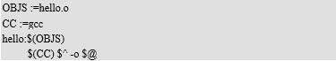

实验五
Makefile 工程管理器
2017.5.125.1 编写包含多文件的 Makefile
【实验内容】
编写一个包含多文件的 Makefile。
【实验目的】
通过对包含多文件的 Makefile 的编写，熟悉各种形式的 Makefile，并且进一步加深对 Makefile 中用 户自定义变量、自动变量及预定义变量的理解。
【实验平台】
PC 机，Ubuntu 操作系统，gcc 等工具
【实验步骤】
1、 用 vi 在同一目录下编辑两个简单的 Hello 程序，如下所示：
2、仍在同一目录下用 vi 编辑 Makefile，不使用变量替换，用一个目标体实现（即直接将 hello.c 和 hello.h 编译成 hello 目标体）。并用 make 验证所编写的 Makefile 是否正确。
3、将上述 Makefile 使用变量替换实现。同样用 make 验证所编写的 Makefile 是否正确
4、用编辑另一 Makefile，取名为 Makefile1，不使用变量替换，但用两个目标体实现（也就是首先 将 hello.c 和 hello.h 编译为 hello.o，再将 hello.o 编译为 hello），再用 make 的‘-f’选项验证这个 Makefile1 的正确性。
5、将上述 Makefile1 使用变量替换实现
【详细步骤】
1、用 vi 打开上述两个代码文件‘hello.c’和‘hello.h’
2、在 shell 命令行中用 gcc 尝试编译，使用命令：‘gcc hello.c -o hello’，并运行 hello 可执 行文件查看结果。
3、删除此次编译的可执行文件：rm hello
4、用 vi 编辑 Makefile，如下所示：
5、退出保存，在 shell 中键入：make 查看结果
6、再次用 vi 打开 Makefile，用变量进行替换，如下所示：

7、退出保存，在 shell 中键入：make 查看结果
8、用 vi 编辑 Makefile1，如下所示：
9、退出保存，在 shell 中键入：make –f Makefile1 查看结果
10、再次用 vi 编辑 Makefile1，如下所示：
在这里请注意区别‘$^’和‘$<’。
11、退出保存，在 shell 中键入：make –f Makefile1查看结果
5.2 嵌套 Makefile 实验
【实验目的】
1、读懂 makefile 文件，能根据 makefile 文件理清程序结构
2、能编写简单 makefile
3、掌握嵌套执行 makefile
【实验环境】
PC 机，Ubuntu 操作系统，gcc 等工具
【实验步骤】
我们要创建的目录结构如下：
一、创建顶层目录
我们首先在用户目录下创建一个 makefileTest 的文件夹：
创建好需要用到的文件夹
#mkdir f1 f2 main obj include
进入 include 文件夹创建一个共用头文件
#cd include
#vim myinclude.h
输入如下内容：
#include stdio.h
保存退出
返回顶层目录:
#cd ..
二、创建顶层 Makefile 文件
#vim Makefile
输入以下内容：

三、进入在 f1 目录下创建 makefile
#cd f1
#vim f1.c
输入如下测试代码：
保存退出。
#vim Makefile
输入如下内容：
保存退出。
#vim Makefile
输入如下内容：
../$(OBJS_DIR)/f1.o: f1.c
$(CC) -c $^ -o $@
保存退出。进入 f2 目录
#cd ../f2
#vim f2.c
输入如下测试代码：
保存退出。
#vim Makefile
输入如下内容：
../$(OBJS_DIR)/f2.o: f2.c
$(CC) -c $^ -o $@
保存退出。进入 main 目录
#cd ../main
#vim main.c
输入如下内容：
保存退出。
#vim Makefile
输入如下内容：
../$(OBJS_DIR)/main.o: main.c
$(CC) -c $^ -o $@
保存退出。进入 obj 目录
#cd ../obj
#vim Makefile
输入如下内容：
../$(BIN_DIR)/$(BIN) : $(OBJS)
$(CC) -o $@ $^
好了，到此准备工作已经完毕，然我们来测试一下写的 makefile 是否好用。进入顶层 Makefile 所在目录，即 makefileTest 目录。
#make
会出现如下信息：
目录树结构如下：
我们看到在 bin 目录下生成了我们的目标文件 myapp，在 obj 目录下生成了.o 的中间文件。让我 们运行下 myapp 看下结果吧。
#bin/myapp
我们也可以用如下命令清除中间文件和目标文件，恢复 make 之前的状态：
#make clean
我们可以看到已经变为 make 之前的目录状态了。大功告成。最后给大家解释一下顶层 makefile 中一些命令的的含义吧。
1、我们注意到有一句@echo $(SUBDIRS)
@echo 其实是一句显示命令
通常，make 会把其要执行的命令行在命令执行前输出到屏幕上。当我们用“@”字符在命令行前，那 么，这个命令将不被 make 显示出来，最具代表性的例子是，我们用这个功能来像屏幕显示一些信息。如： @echo 正在编译 XXX 模块......
当 make 执行时，会输出“正在编译 XXX 模块......”字串，但不会输出命令，如果没有“@”，那么， make 将输出：
echo 正在编译 XXX 模块......
正在编译 XXX 模块......
如果 make 执行时，带入 make 参数“-n”或“--just-print”，那么其只是显示命令，但不会执行命 令，这个功能很有利于我们调试我们的 Makefile，看看我们书写的命令是执行起来是什么样子的或是什么 顺序的。
而 make 参数“-s”或“--slient”则是全面禁止命令的显示。
2、@(RM)并不是我们自己定义的变量，那它是从哪里来的呢？
通常在清除文件的伪目标所定义的命令中“rm”使用选项“–f”（ --force）来防止 在缺少删除文件时出错并退出，使“make clean”过程失败。也可以在“rm”之前加 上“-”来防止“rm”错误退出，这种方式时 make 会提示错误信息但不会退出。为了 不看到这些讨厌的信息，需要使用上述的第一种方式。
另外 make 存在一个内嵌隐含变量“RM”，它被定义为：“RM = rm –f” 。因此在书写“clean”规则的命令行时可以使用变量“$(RM)”来代替“rm”，这样可以免出现一 些不必要的麻烦！这是我们推荐的用法。
3、make -C $@
这是一句嵌套 makefile 的语法，在一些大的工程中，我们会把我们不同模块或是不同功能的源文件 放在不同的目录中，我们可以在每个目录中都书写一个该目录的 Makefile，这有利于让我们的 Makefile 变得更加地简洁，而不至于把所有的东西全部写在一个 Makefile 中，这样会很难维护我们的 Makefile， 这个技术对于我们模块编译和分段编译有着非常大的好处。
例如，我们有一个子目录叫 subdir，这个目录下有个 Makefile 文件，来指明了这个目录下文件的编 译规则。那么我们总控的 Makefile 可以这样书写：
subsystem:
cd subdir && $(MAKE)
其等价于：
subsystem:
$(MAKE) -C subdir
定义$(MAKE)宏变量的意思是，也许我们的 make 需要一些参数，所以定义成一个变量比较利于维护。 这两个例子的意思都是先进入“subdir”目录，然后执行 make 命令。
4. export CC OBJS BIN OBJS_DIR BIN_DIR
我们把这个 Makefile 叫做“总控 Makefile”，总控 Makefile 的变量可以传递到下级的 Makefile 中 （如果你显示的声明），但是不会覆盖下层的 Makefile 中所定义的变量，除非指定了“-e”参数。
如果你要传递变量到下级 Makefile 中，那么你可以使用这样的声明：
export